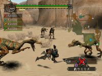
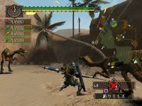
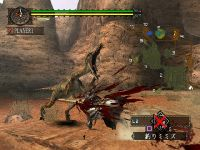

Monster Hunter
This web page is to help all new Monster Hunters.The items and weapons (legally) available,stratergies for some nasty quests,The finer points of Different weapons,etc.
Review
| Release Date |
Distributor |
Developer |
Players |
Rating |
Difficulty |
| 27/5/2005 | THQ | Capcom PS1 | 1, 4 | MA15+ | Medium |
| Save Size |
Sound Format |
Vibration |
60Hz Mode |
50Hz Border |
Widescreen |
| 235KB | Stereo | Yes | Yes | Medium | No |
|  |
| The Japanese game online. |
I'll say this right at the top. Although Monster Hunter has offline modes it's when you play it online that it really becomes something special. If you're an online gamer then this is a game that is highly recommended. So what's it all about then? Essentially you are a hunter, but rather then hunting Deers, or people as in other game you will be hunting monsters - many of which are heavily influenced from the dinosaurs. Monster Hunter has been developed by Capcom with Tsuyoshi Tanaka as producer. His other credits include Devil May Cry 3: Dante's Awakening and the two Resident Evil Outbreak titles. He certainly has a talent for developing exciting titles and Monster Hunter is no exception.
It was different then, in our distant homeland. The beasts roamed freely. Some had teeth the size of a man. Some were bigger still. Our only defence were the hunters. And there was one, the most ferocious, the most intelligent, who stood above them all. You are the Monster Hunter, a warrior hunting the biggest of big game ever... when you're not being hunted yourself.
When you start the game you have to create a character from scratch. Unfortunately it really is very basic by todays standards - Name, sex, face shape, hair and voice type but that's about it really. Soon after you awaken in your bedroom where the game begins. The intial quests are fairly basic, kill a couple of animals and collect the meat or go fishing to take them back to the villiage and so on. It soon gets a lot tougher as you start to attack much larger enemies. Monster Hunter’s quests fall into three categories – Gathering, Hunting and Capturing. Gathering quests require hunters to search areas for certain items; Hunting quests require hunters to seek out and slay a set number of certain monsters and Capturing quests involve wounding a specific monster, trapping it and then tranquilising it. Capturing quests only become available once the player has unlocked the higher levels of the game. Successful completion of quests results in both financial and material rewards plus an increase in Hunter ranking.
|  |
| Surrounded on both sides. |
While Monster Hunter is a good single player game there is little doubt that the game comes into its own when played online. Players can undertake quests alone or join forces with up to three other players online and carry out the specific multiplayer quests. The quests themselves and the tactics used to complete them are different between online and offline modes. Firstly the monsters will be significantly tougher in the online mode. Single player quests naturally allow the player to build up their character and Hunter Ranking before they go online. Co-operation is the key in multiplayer quests with players performing specific tasks to achieve a common goal. For instance, in order to steal a huge monster’s egg three of the party may want to distract the beast while the final member carries it away unnoticed. As in Resident Evil: Outbreak players can exchange items between members of the party.
My biggest problem with this game is the camera which is simply terrible. You would think that so many years into the 3D polygon revolution developers would have this fixed, but it's far from it. Another issue concerns the single player mode which not only becomes a little tiresome but also quite difficult as you begin to encounter enemies designed more for the 4-player online mode.
|  |
| Ohhh that has to hurt. |
The first scenes you see in this game are some wonderful Jurassic Park styled running of the dinosaurs type moments. Capcom, as always, have high production values in their game and Monster Hunter is no exception. The in-game graphics are also impressive with some wonderful enemies and while the animation could be a little smoother in places when you consider that it's online and the age of the PS2 it really is quite an accomplished title. The same can't quite be said of the sound which is rather mediocre. There are no voiceovers only text boxes for dialogue, the music is forgettable and the effects pretty weak.
If you're an online gamer we highly recommend you pick up Monster Hunter. The game is a blast and really the closest thing to an online RPG on the PS2. The single player mode is also entertaining for a while but becomes quite difficult without friends helping out. Still, a game worth a purchase.
| GRAPHICS | In-game Monster Hunter looks quite impressive, poor cameras. | 76% |
| SOUND | Nothing really outstanding here but nothing dreadful either. | 59% |
| GAMEPLAY | Multi-player online is brilliant, single player less so sadly. | 78% |
| VALUE | A lengthy game which includes more RPG elements then expected. | 75% |
| OVERALL | If you're after a single-player experience then Monster Hunter may not be the game for you however if you have the capabilities to play this game online then this is almost an essential purchase. An exciting title that will keep you playing for quite some time. | 76% |